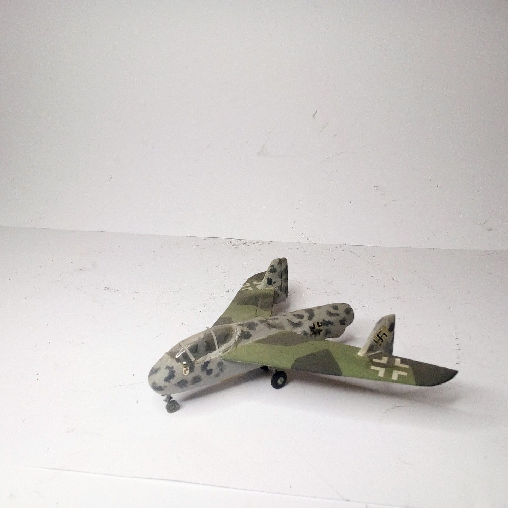
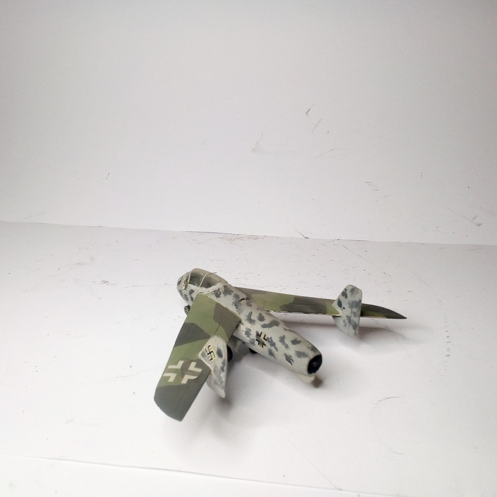

Aerei · scale model archive
Junkers EF128
Junkers EF128 — Kit: balsa sctratchbuilt, Scale: 1/72. Project of a single engined jet fighter in 1944 Model done at a time when no kit was yet…

Photo gallery

English description
Project of a single engined jet fighter in 1944 Model done at a time when no kit was yet available, very interesting aerodynamic concept.
#1/72 #scratchbuild
Descrizione italiana
Progetto di una single motored jet figther in 1944 Modello done at una time when no kit fu yet available, very interessante aerodynamic concetto.